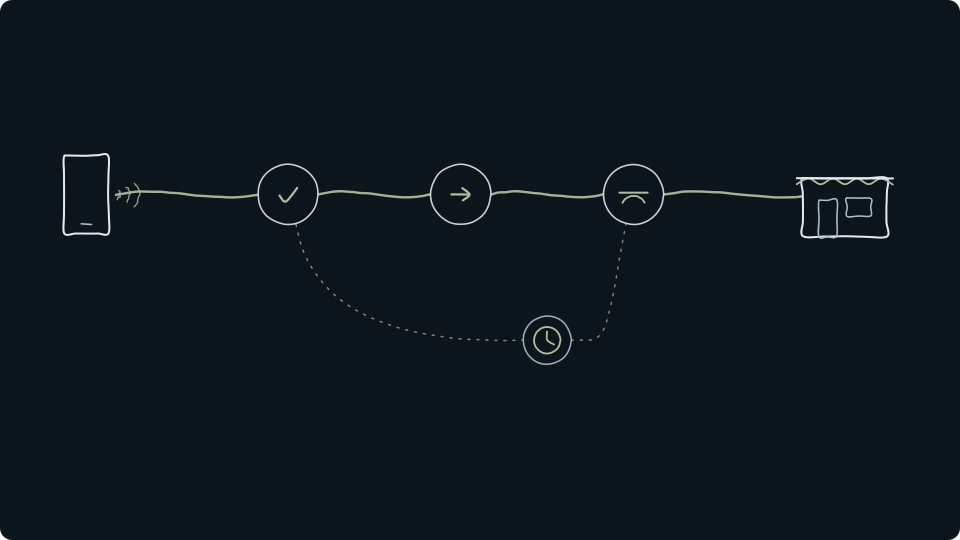
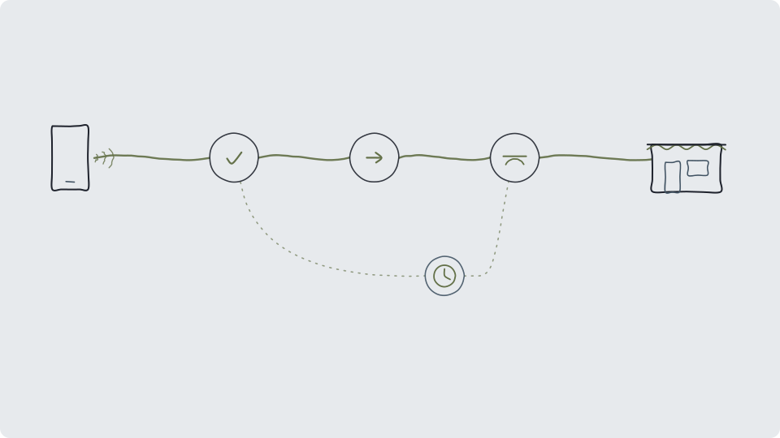
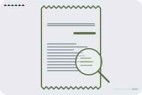
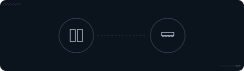
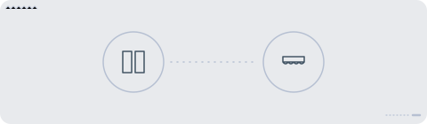

De … største af temaets … selskaberTemaets … selskaber
Tryk på et selskab for at se mere om det.
Vis alle … selskaber i temaet
Andele i PMINDI, den udgave af fonden, der udbetaler udbytte, pr. … (fondens data).

Et af de … temaer i NewDeal Invest
Fem slags tjenester og fem forskellige måder at tjene penge på.
Når du betaler med telefonen eller handler aktier i en app, ser det ens og enkelt ud. Bag skærmen skal oplysninger kontrolleres, penge flyttes og aftaler registreres. Temaet samler de selskaber i fonden, der laver den slags finansielle tjenester med teknologi. Det kaldes fintech.

… %
af PMINDI er placeret i temaet Fintech.
Andele i PMINDI, den udgave af fonden, der udbetaler udbytte, pr. … (fondens data).
De … temaer efter størrelse. Fintech er nr. ….
Fonden
Temaet handler om noget, de fleste gør hver dag.
En digital wallet er en betalingsapp i fx telefonen, hvor kortet er gemt.


Hvad der vejer mest
Fintech
Kvitteringen har fem linjer. Hver linje viser, hvad der sker for kunden, og hvordan selskaberne tjener penge. Tryk på en linje for at se mere.
Kvittering
Andel af fonden
Hvad sker der Kunden handler aktier og andre værdipapirer i en app. Hos eToro kan brugerne også følge hinanden som i et socialt netværk.
Sådan tjener selskaberne penge
En del af handlen er krypto, som har sit eget tema i fonden: Krypto.
Tryk på et selskab for at se, hvad det laver.
Hvad sker der Kunden låner, sparer og betaler i én app. Den slags banker kaldes også neobanker, fordi de kun findes digitalt.
Sådan tjener selskaberne penge
Mest på renter af lån og på gebyrer, fx et lille gebyr, når kunden betaler med kortet. SoFi har sin egen bank. Chime er ikke selv en bank. Bankydelserne leveres af The Bancorp Bank og Stride Bank.
Tryk på et selskab for at se, hvad det laver.
Hvad sker der Pengene flyttes fra kunden til butikken, i en fysisk butik eller på nettet.
Sådan tjener selskaberne penge
Typisk et lille gebyr pr. betaling, mange gange. Shift4 leverer software til butikker og sørger for, at kundernes betalinger går igennem. Klarna og Affirm lader også kunden betale over tid.
Tryk på et selskab for at se, hvad det laver.
Hvad sker der En låneansøgning bliver vurderet, før pengene udbetales.
Sådan tjener selskaberne penge
En långiver tjener på renter, men kan miste penge på lån. Upstart og Pagaya laver computermodeller, som långivere bruger til at vurdere, om den, der søger om lån, kan betale tilbage. Figure laver boliglån med sikkerhed i boligens friværdi og registrerer lånene på blockchainen Provenance.
Tryk på et selskab for at se, hvad det laver.
Hvad sker der Kunden betaler for en forsikring og får penge, hvis skaden sker.
Sådan tjener selskaberne penge
På forskellen mellem det, kunderne betaler, og det, skaderne og driften koster. Root sætter prisen på bilforsikring efter, hvordan kunden kører. Lemonade tilbyder lejer-, hus-, dyre-, bil- og livsforsikring. Kunden tegner forsikringen og anmelder skader i en chat med et computerprogram (en chatbot).
Tryk på et selskab for at se, hvad det laver.
Tallet til højre og bjælken under det viser linjens andel af fonden.
Mærket ved et selskab betyder, at det også hører til et andet tema.
Sea, Grab og MercadoLibre hører til Platformsøkonomi, Coinbase og Circle til Krypto og Oscar Health til Sundhed og biotek. De tælles under deres egne temaer og indgår derfor ikke i fintechs andel.
Syv af temaets egne selskaber laver også noget, der hører til et andet tema: Upstart og Lemonade (Software & AI), eToro, Robinhood og Figure (Krypto) og Global-e og Kaspi.kz (Platformsøkonomi). De har et mærke i kvitteringen, og i fondens opdeling tælles de kun med her.
Ved kassen
Wall Street Journal skiller en kortlæser ad og viser, at kortet sender en engangskode i stedet for kortnummeret. Videoen er ikke fondens holdning.
Set udefra
Her er udvalgte opslag og videoer fra medier, en centralbank og selskaber. De er ikke fondens holdning. Opslag og videoer hentes først, når du trykker på dem.
Fra 2022Hvem tager et gebyr, når du betaler med kortThe Wall Street Journal, på engelsk. Den handler om amerikanske kreditkort. I EU er reglerne for kortgebyrer anderledes.
Sådan tjener betaling over tid pengeThe Wall Street Journal, 2025, på engelsk. Tallene i videoen gengives ikke her.
Hvordan virker digitale betalinger?Bank of England, 2026, på engelsk. En medarbejder i Bank of England forklarer, hvordan pengene flyttes mellem bankerne. Beskrivelsen bygger på Bank of Englands egen tekst til videoen. Tallene i videoen gengives ikke her.
Digital tegnebog
Bloomberg @business · på engelsk
Kort fortalt Ifølge Bloomberg siger den britiske konkurrencemyndighed, at Apples kontrol over iPhone forhindrer andre betalingsapps i at konkurrere med Apples digitale tegnebog.
Apple står under temaet Platformsøkonomi.
Digitale penge
Reuters @ReutersBiz · på engelsk
Kort fortalt Ifølge Reuters har Sveriges centralbank, Riksbanken, genoptaget debatten om en digital e-krone, i takt med at den digitale euro og stablecoins bliver en større udfordring. Stablecoins er kryptopenge, der er lavet til at følge værdien af fx dollar eller euro.
Betalinger
Bloomberg @business · på engelsk
Kort fortalt Ifølge Bloomberg samarbejder Visa med BILL og Billtrust om at lade AI-assistenter, der selv kan udføre opgaver, starte og gennemføre virksomheders betaling af regninger, uden at et menneske skal bekræfte sin identitet ved hver betaling.
Opslaget handler om Visa og BILLs betalingstjenester.
Opslagene er udvalgt af teamet bag NewDeal Invest. „Kort fortalt“ er vores danske gengivelse. Afsenderne og de nævnte selskaber står ikke bag denne side.
Tryk på et selskab for at se mere om det.
Andele i PMINDI, den udgave af fonden, der udbetaler udbytte, pr. … (fondens data).
Udvalgte offentlige opslag om selskaberne i temaet. Opslagene er andres og ikke NewDeal Invests holdning.
Henter opslag …


Selskabets egen videoSådan leder Visa efter svindelVisa, 2026, på engelsk. Visa er ikke blandt fondens selskaber. Tallene i videoen er Visas egne og gengives ikke her.
Videre


Tegninger, ikoner og videoplakater. Illustration: NewDeal Invest.
Videoerne er fra The Wall Street Journal, Bank of England og Visa og vises fra YouTube, først når du trykker på dem. Opslagene er fra X. Logoer tilhører de enkelte selskaber og viser kun, hvilke selskaber fonden ejer aktier i. Afsenderne og selskaberne står ikke bag denne side, og der er intet samarbejde med dem.